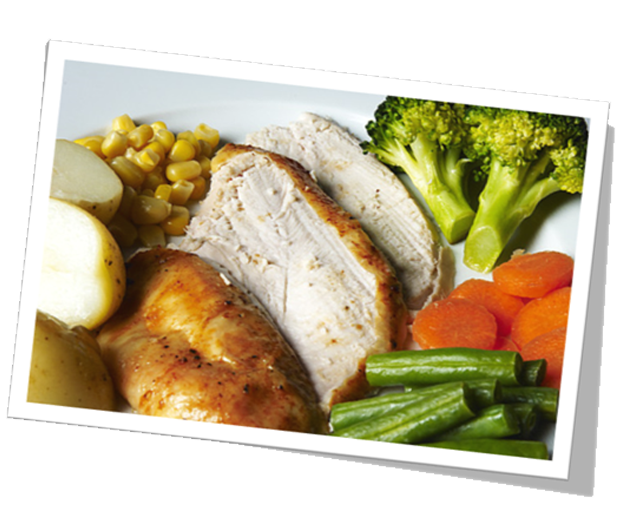

The content in this App has been developed by Oxleas NHS Foundation Trust – you will not be asked to provide any contact details or personal information. The information in each area has been designed for specific age groups. Oxleas NHS Foundation Trust cannot be responsible for the content of third party websites.
Brush your teeth and gums in the morning and before bed with a fluoride toothpaste for at least 2 minutes. Brush in a circular motion and make sure you get all the way to the back.
Floss daily either before brushing or after. This will remove any food particles that are trapped between your teeth. It also reduces the risk of getting gum disease.
Dentist visits depend on how healthy your teeth and gums are. It can vary between needing a check-up every 6 months to only having to go every 2 years.
Eating too many sugary foods can be harmful to the health of your teeth and could result in decay and dental treatment such as fillings or root canals.
To find out more about dental care and oral hygiene follow the link below:
Dental health, oral health and teeth
To find a local dentist in your local area please follow the links below:


Meningitis is an infection of the meninges (protective membranes) that surround the brain and spinal cord.
The infection causes the meninges to become inflamed (swollen), which in some cases can damage the nerves and brain.
To find out more about meningitis from the NHS Choices website,
click here.
To find out more about meningitis from Public Health England,
click here.
If you are seriously worried about a child who is ill, don’t wait for a rash to appear – get medical help. But if they are already ill and get a new rash or spots, use the Tumbler Test.
Press a clear glass tumbler firmly against the rash. If you can see the marks clearly through the glass seek urgent medical help immediately.
In older children and adults, the symptoms of meningitis can include:
It is important to note that not everyone will get all of the above symptoms.
If you notice any of the symptoms of meningitis, particularly in young children, seek medical help immediately.
The best way to prevent meningitis is by ensuring vaccinations are up-to-date. Children in the UK should receive the available vaccines as part of the childhood vaccination programme.
It is also important to check your travel vaccinations are up-to-date before travelling in certain parts of the world.
Read more information about Meningitis vaccination
Asthma is a common long-term condition that can cause a cough, wheezing, and breathlessness. The severity of the symptoms varies from person to person. Asthma can be controlled well in most people most of the time.
The cause of asthma is not fully understood, although it is known to run in families. You are more likely to have asthma if one or both of your parents has the condition.
trigger is anything that irritates the airways and brings on the symptoms of asthma. These differ from person to person and people with asthma may have several triggers. Common triggers include house dust mites, animal fur, pollen, tobacco smoke, exercise, cold air and chest infections.
Read more about the causes of asthma.
Asthma can also be made worse by certain activities, such as work. For example, some nurses develop asthma symptoms after exposure to latex. This is often referred to as work-related asthma or occupational asthma.
While there is no cure for asthma, there are a number of treatments that can help effectively control the condition. Treatment is based on two important goals:
Treatment and prevention involves a combination of medicines, lifestyle advice, and identifying and then avoiding potential asthma triggers.
Read more about living with asthma.
Conjunctivitis is redness and inflammation of the thin layer of tissue that covers the front of the eye (conjunctiva). It is very common.
People often refer to conjunctivitis as red eye. Conjunctivitis can affect one or both eyes.
Other symptoms of conjunctivitis include itchiness and watering of the eyes, and sometimes a sticky coating on the eyelashes (if it's caused by an allergy). Read more about the symptoms of conjunctivitis.
It's normal for babies to develop skin rashes from as early as a few days old, as their sensitive skin adapts to a different environment. Most rashes are harmless and go away on their own.
However, if your baby has developed a rash and seems unwell, or if you're worried, see your GP to find the cause and any necessary treatment. It's especially important to be aware of the warning signs for meningitis.
This guide may give you a better idea of the cause of the rash, but don't use it to diagnose your baby's condition by yourself. Always see a GP for a proper diagnosis. This page covers the most common causes of skin rashes in babies, which are:
It also describes the warning signs of meningitis and explains what to do if you're worried your baby may be at risk.
Earache can be a sharp, dull or burning ear pain that comes and goes or is constant. One or both ears may be affected.
You should call your GP if:
You can use over-the-counter painkillers such as paracetamol or ibuprofen to treat the pain. Children under 16 years of age should not take aspirin.
Placing a warm flannel against the affected ear may also help to relieve the pain.
Your pharmacist may be able to recommend over-the-counter eardrops for your earache, but let them know your symptoms and ask for their advice first. Eardrops or olive oil drops should not be used if the eardrum has burst, and they will not help an ear infection.
If you or your child has an ear infection, you should avoid getting the affected ear wet.
To find out more about earache, click here
Smoking, drinking and doing drugs can affect your life and others. It is important to be wise and stay safe. You can contact the School nurse who can provide confidential advice and where to get further support.
Under the Misuse of Drugs Act 1971, illegal drugs are placed into one of 3 categories - Class A, B or C - broadly based on their harmfulness
either to the user or to society when they are misused. The class into which a drug is placed affects the maximum penalty for an offence
involving the drug – e.g. Class A drugs attract the most severe penalty as they are considered likely to cause the most serious harm.
Drugs controlled under the Misuse of Drugs Act are illegal to have, produce, give away or sell.
FRANK - Friendly, confidential drugs advice
MET POLICE - drugs and alcohol - get the facts
Drugs: getting help
Smoking can damage your lungs and cause other long term (chronic) conditions. Once you start smoking it is very difficult to give it up because of the
addictive drug Nicotine in cigarettes. It has other harmful substances in it: Tar, carbon monoxide and many other harmful chemicals.
If you want to find out more follow these links:
Support to stop smoking
Smoke free NHS
 Alcohol is legal for those aged 18 and over in England, but it is still a drug. Alcohol is a depressant which means it slows the body’s responses down.
Alcohol can affect your moods and can cause other illnesses, cancers, heart problems, high blood pressure, stroke, liver disease, and falls and other accidents.
Alcohol is legal for those aged 18 and over in England, but it is still a drug. Alcohol is a depressant which means it slows the body’s responses down.
Alcohol can affect your moods and can cause other illnesses, cancers, heart problems, high blood pressure, stroke, liver disease, and falls and other accidents.
FRANK recommend on their website:
‘ For adults( over 18) – it is recommended men shouldn’t regularly drink more than 3-4 units a day and women shouldn’t regularly drink more than 2-3 units a day (regularly is drinking at this sort of level every day or most days of the week). After a night of heavy drinking, you shouldn’t drink for 48 hours to allow the body to recover.’
Eating healthy is an important part of a healthy lifestyle and is something that should be taught at a young age. The following are some general guidelines for helping your adolescent eat healthy. It is important to discuss your adolescent's diet with his or her health care provider before making any dietary changes or placing your adolescent on a diet. Discuss the following healthy eating recommendations with your adolescent to ensure he or she is following a healthy eating plan:
The Choose My Plate icon is a guideline to help you and your adolescent eat a healthy diet. My Plate can help you and your adolescent eat a variety of foods while encouraging the right amount of calories and fat.
The following food plate was prepared to guide parents in selecting foods for children age 2 and older.

The My Plate icon is divided into five food group categories, emphasizing the nutritional intake of the following:
Oils are not a food group, yet some, such as nut oils, contain essential nutrients and can be included in the diet. Others, such as animal fats, are solid and should be avoided.
Exercise and everyday physical activity should also be included with a healthy dietary plan.


| AGE | AVERAGE NIGHTS SLEEP |
| 4-6 YEARS | 10.5 -11.5 HOURS |
| 7-9 YEARS | 10-11 HOURS |
| 10-12 YEARS | 10 HOURS |
| TEENAGERS | 9 HOURS |
Germs are tiny organisms or living things that cause disease. They produce toxins (chemicals that harm the body) causing infections: fevers, colds, rashes, coughing, upset stomachs. They are so tiny you need a microscope to see them.
They get onto our bodies without us noticing.
Bacteria are single celled and need a host, (good and bad).
Viruses cause infection and need to be inside living cells to grow
Fungi: are multi cell and need a host.
Protozoa: are one celled organisms.
All the things we do to keep our bodies clean , feel good, look good, smell good and stay healthy
Wash your hands:
Keeping your body clean:
Clean clothes:
Clean teeth:
Washing your hair:
Washing your feet:
At least once a week with shampoo.
Every year, throughout England children in Reception and year 6 have their height and weight measured as part of the National Child Measurement Programme (NCMP). If your child is in Reception or year 6, you should receive a letter with more information about the programme in your school. Trained staff will measure your child`s height and weight at school. The results will not be shared with teachers or other children. You do have the opportunity to opt out of the NCMP if you wish to do so.The information about children`s weight helps to build a national and local picture on how children are growing.
As part of the Healthy Child Programme all children in their first year of mainstream primary school will be offered a hearing test.
Trained staff will use an Audiometer and headphone set to carry out the hearing test.
The school nursing team will obtain parental consent before a referral is made to Audiology Clinic.
You do have the opportunity to opt out of the hearing test if you wish to do so.
As part of the Healthy Child Programme all children in their first year of mainstream primary school will be offered vision screening.
The school nursing team will ensure that vision screening is undertaken to an agreed standard. Children with visual defects will be referred to the appropriate service.
In addition, a letter is sent home to parents via the school for all pupils in year 2 advising that a vision check with an optician should be completed at least once
a year. A comprehensive optical service is available from a local optician which is free of charge for children.
Puberty is the time in your life when your body does a lot of growing and changing as boys develop into young men and girls develop into young women.
All the changes are caused by hormones (chemical messengers) that travel around your body in your blood supply. These hormones affect your moods as well as making
your body change.
You will easily be able to see the changes happening on the outside of your body but there are some very important changes happening on the inside of your body too.
The main change is that your sex (reproductive) organs start to work ready for the future so that you could make a baby one day.
Puberty happens to everyone but girls tend to start changing a year or so earlier than boys. This could be around the age of 9 or 10 for girls and
around the age of 11 or 12 for boys. On average it takes 6 or 7 years for all the changes to be complete.
Some changes will be the same for boys and girls. Both boys and girls will notice that they grow taller fairly quickly and that hair will appear on the body,
particularly under the arms and around the ‘private parts’ between the legs.
Skin will become greasier and may cause spots. The hair on your head will become greasier too and will need washing more often.
You are likely to be quite moody as you start to experience stronger emotions and attractions towards others.
For boys the shoulders become broader as they develop stronger muscles. Near the end of puberty boys will start to grow facial hair (beard and moustache develops)
and some boys will grow hair on their chest. Boys will develop deeper voices and may notice a lump appear at the front of their neck (adam’s apple).
For girls, the hips become broader (to allow room for a baby to grow one day) and the waist appears narrower which gives them a softer, curvier shape. Girls will notice
that the nipples on their chest become slightly bigger and turn a darker colour as their breasts develop.
Both boys and girls will find they need extra sleep throughout their teenage years as all this growing and changing is pretty tiring.
Girls will start to have periods. This is when an egg is released from one of the ovaries about once a month and travels towards the womb along the fallopian tube.
The lining of the womb is made of blood and gradually becomes thicker as the egg travels towards it. When the egg reaches the womb, if it is not fertilized
(joined by a sperm from the man) to make a baby, it is no longer needed.
The egg and the lining (blood) then drip out of the girl’s body through the vagina. It can take about 4 or 5 days for the drips of blood to stop. Then the whole cycle
starts again as an egg is released from the other ovary.
Boys will start to have ‘wet dreams’ from time to time while they are asleep. This is when sperm, which start to be made in the testicles during puberty,
come out of the body mixed in a small amount of liquid called semen.
The sperm travel from the testicles and up through the sperm ducts (tubes) which connect to the tube inside the penis (urethra). The tube inside the penis connects
to the bladder as well as to the sperm ducts.
Sperm from the testicles and urine from the bladder cannot come out of the penis at the same time. Sperm can only come out when the penis is erect
(becomes larger and sticks up).
Everyone has small holes in their bodies around their ‘private parts’. Knowing where they are and why they are there can help in understanding how the body works.
Boys and men have two holes. One is at the end of the penis so that urine (wee) can come out from the bladder. This hole also allows sperm to come out (mixed in a little
liquid once the testicles start to work properly during puberty) but not at the same time as urine. The other hole is in the bottom (the anus) so that the body
can pass solid waste (poo).
Girls and women have three holes. All three holes are underneath the body, between the legs. The clitoris is not a hole. It is a sensitive, round little bump. Just below
the clitoris is a very small hole where urine (wee) comes out. This hole only leads to the bladder where the urine is stored.
The next, slightly larger hole is the vagina. This hole leads to the womb and is where blood comes from once periods start during puberty. The vagina is also where
the male penis enters the female body during sex and is usually where a baby comes out when it is being born. Lastly, there is a hole in the bottom (the anus) where solid waste (poo) comes out.
Puberty happens to everyone, although the changes will take place at different times for different people.
By the time girls are about 16, and boys are about 17, puberty changes should be mostly complete.
The changes affect your thoughts and feelings as well as your body. It is important that the sex organs start to work properly during puberty so that you could have a
baby one day.
Understanding about puberty means that you don’t have to worry about what is happening. Parents, teachers, school nurses and books are good for finding out more information.
A period is a small amount of blood that you will notice leaving your body from between your legs for a few days every month.
Periods are something that only happens to girls and women. Boys and men do not have periods.
Girls will usually have their first period sometime between the ages of nine and 16. Periods are caused by hormone changes in your body as you grow up.
Hormones are chemical messengers that travel around your body in your blood supply.
You will be able to see some of the changes that hormones cause on the outside of your body (for example breasts will develop), but some changes will also
happen inside your body, which you won’t be able to see (for example the reproductive organs start to work).
Periods are important because they are an outward sign (the blood) that special parts inside your body (reproductive organs) are starting to work properly.
This is good because it means that you will be able to have a baby one day.
Once you’ve had your first period, it takes a while (up to a year) for them to settle into a regular pattern of happening once a month. Most women
will continue to have periods until they are about 50 years old.
The proper word for periods is menstruation. It’s all the same thing but periods is much easier to say!
An egg is released from one of the ovaries about once a month and travels towards the womb along the
fallopian tube.
The lining of the womb is made of blood and gradually becomes thicker as the egg travels towards it. When the egg reaches the womb,
if it is not fertilized (joined by a sperm from the man) to make a baby, it is no longer needed.
The egg and the lining (blood) then drip out of the girl’s body through the vagina It can take about four to five days for the drips of blood to stop.
Then the whole cycle starts again as an egg is released from the other ovary. This process is known as the menstrual cycle and is how
periods happen.
Often starting secondary school can create feelings of excitement, because you’re growing up, no longer a little kid. You may also be excited about making new friends and learning new things. For some however they may feel a mixture of excitement and nerves.
Things that make us nervous about starting secondary school include:-
To make this easier go and have a look around the school with your parents/guardians. Make notes of where key places are, what they may be close to. Practice the journey to school so you’re confident of the route and time it takes.
If you’re worried about friends try and join in conversation with other people in your class and join school clubs. Clubs are a great way to get to know people who share similar interests.
Write down homework and get it done, don’t leave it until the last minute to do. Ask a teacher for help if you’re struggling with the work. They want to help.
After a few weeks those anxieties will disappear. If they don’t then talk to your parents/guardians about your worries or your tutor, they can help.
Moving school can be an anxious time. You’re leaving behind friends and familiar surroundings, but ahead of you are new friends and exciting new places.
Some of the anxieties about moving schools are similar to those mentioned in “starting secondary school”. Such as the journey to school, getting lost in the new school building and not making friends.
Instead of thinking that these are problems, start thinking positively and find solutions to the problem before it happens then you’re prepared.
Practice it! Find out the route to school and practice it before you need to use it. That way you’ll be confident you know which way to go or what buses you need to get.
Get involved! By joining clubs both inside school and within your community you’re meeting new people with similar interests and having fun at the same time.
Ask for help! If you get lost in school ask an adult where something is. If you’re struggling with class work or homework tell your teacher and they will help you.
Don’t bottle it up! If you are worried about something then talk to your parents/guardians or a teacher in school. If you bottle up feelings no one can help.
Children's continence drop-in sessions
We are running a monthly drop in session, where you can come and have a chat with our continence trained nurses and nursery nurses. We are happy to answer any of your questions and can refer you on to other services, where required.
Where and when
No appointment is needed, please just drop in.
For more information: ww.eric.org.uk/Teens/home
Bexley Bedwetting (Enuresis) Service
For advice support or information for all school aged children 5-18yrs contact your school nurse on 01322 357914
Discuss your child's needs with a school nurse who can provide simple interventions and referral where required to a specialist support service.
For more information: ww.eric.org.uk/Teens/home
There is no legal definition of bullying. But it is usually defined as repeated behaviour which is intended to hurt someone either emotionally or physically, and is often aimed at certain people because of their race, religion, gender or sexual orientation or any other aspect such as appearance or disability.
Bullying affects lots of young people and happens everywhere, but it's the way that it's dealt with which makes the difference between feeling different and left out, to feeling completely worthless and alone.
Bullying isn’t just experiencing being physically hurt; it includes all of these things described by young people as:
These things can happen at school or at home, but they can also happen online or on social networks. Bullying can also be part of other forms of abuse, including neglect, emotional, physical and sexual abuse.
" bullying is bullying through a mobile phone or online (eg by email, instant messenger or on social network sites). Cyber bullying is just as serious. This type of bullying does not make it easier to deal with just because it isn’t face to face. Cyber bullying is becoming more and more popular as the social media plays a huge role in young people’s lives.
Peer pressure is feeling like you have to do something or be friends with someone because other people are making you. It makes you feel like you can’t be different from other people in case they make fun of you. You are free to make choices about your life and other people’s opinion should never make you feel bad about your decisions.
To find out more about peer pressure, click here.
Getting to know people and making friends is very important, not just in school, but throughout your life. Friends are people who you trust and care about and people that will listen to you when you need help. Sometimes it can be hard to keep friendships going and there can be problems. When things go wrong it’s difficult to know what to do.
To find out more about friendships, click here
As you grow up your feelings start to change and you will find yourself thinking differently about boys and girls. You may feel ready to start a relationship with someone. These feelings can be complicated and confusing but don’t worry, you’re not alone.
To find out more about relationships, click here
Domestic violence is officially classified as "any incident of threatening behaviour, violence or abuse (psychological, physical, sexual, financial or emotional) between adults who are or have been in a relationship together, or between family members, regardless of gender or sexuality".
We think of domestic violence as hitting, slapping and beating, but it can also include emotional abuse as well as forced marriage and so-called "honour crimes".
It's abuse if your partner or a family member:
Getting help for domestic violence
Report domestic abuse
Women's Aid - www.womensaid.org.uk
Domestic violence is very common with at least 1 in 4 women experiencing it in their lifetime and between 1 in 8 to 1 in 10 women experiencing it annually. An analysis of data from the Intimate Personal Violence (IPV) module British Crime Survey 2001 showed that 26% of women have experienced at least one incident of non-sexual domestic abuse since they were 16. Note that these figures do not include sexual abuse (which in many cases is perpetrated by a partner, former partner or other family member). If sexual assault and stalking are included, then 45% of women have experienced at least one incident of inter-personal abuse in their lifetimes.
The vast majority of the victims of domestic violence are women and children, and women are also considerably more likely to experience repeated and severe forms of violence, and sexual abuse. Women may experience domestic violence regardless of ethnicity, religion, class, age, sexuality, disability or lifestyle. Domestic violence can also occur in a range of relationships including heterosexual, gay, lesbian, bisexual and transgender relationships, and also within extended families.
Women’s Aid information and support services exist to respond to the needs of women and children. However, Women’s Aid recognises that controlling and abusive behaviour can also occur in male gay relationships and by women against men.
The majority of abusers are men, but in other respects, they vary: abusers come from all walks of life, from any ethnic group, religion, class or neighbourhood, and of any age. See: Respect UK - www.respect.uk.net
Since abusers typically display different kinds of behaviours in public than they do in their private relationships, most people are not usually aware of domestic violence when it is happening in their community. Sometimes, it is difficult to believe that a person who behaves so respectably in public can behave so appallingly with their family. This can sometimes make it even more difficult for women who are trying to reach out for support, as they may feel that they will not be believed when they speak out about the violence.
Cervical cancer develops in the cervix (the entrance to the womb – see diagram below). It is caused by a virus called the papillomavirus or HPV.
Cervical cancer can be very serious. After breast cancer, it is the most common women’s cancer in the world. In the UK, around 3000 cases of it are diagnosed every year and about 1000 women die from it.
For more information, visit click here.
The human papillomavirus is very common and you catch it through intimate sexual contact with another person who already has it. Because it is so common, most people will get infected at some point in their lifetime. In most women the virus does not cause cervical cancer. But having the vaccine is important because we do not know who is at risk.
There are many types of human papillomavirus. The HPV vaccine protects against the two types that cause most cases (over 70%) of cervical cancer.
Because the vaccine does not protect you against all of the other types, you will still need to have cervical screening (tests that pick up early signs of changes in the cervix) when you are older.
Most girls who have the vaccination will reduce their risk of getting cervical cancer by over 70%.
You will need three injections over about six months to get the best protection. It’s important that you have all three doses. The nurse will give you the vaccination in your upper arm.
Your school or local NHS will contact you when it is time for your vaccination.
Remember, the HPV vaccine is recommended for all girls aged 12 and up to their eighteenth birthday. It is offered routinely to all girls starting in school year 8. From September 2014, the number of doses of HPV vaccine that is given to teenage girls will be reduced from three to two.
Like most injections, the side effects of the HPV vaccination are quite mild. Soreness, swelling and redness in the arm are common but wear off in a couple of days. More serious side effects are extremely rare. The vaccine meets the rigorous safety standards required for it to be used in the UK and other European countries. See www.nhs.uk/vaccinations or the patient information leaflet (PIL) given to you at the vaccination if you’d like more information on side effects.
Tens of millions of doses of HPV vaccine have been given to girls worldwide.
You will probably want to share information about the vaccine with your parents and discuss it together. If you are being offered the vaccination at school, you may be given a consent form that your parent/guardian or you should sign giving permission for you to have the vaccination.
Information about your vaccinations will be added to your NHS records.
The doctor or nurse will discuss the HPV vaccination with you at your appointment and will be able to answer any questions you may have.
Yes. If you missed any of your vaccinations, for whatever reason, you should speak to your nurse or doctor about making another appointment. It’s best to make your appointment as soon as possible after your original one. The most important thing is to have all three doses – it’s never too late to catch up.
Yes. From September 2012, the HPV vaccine is changing but stocks of the vaccine that was used when the programme started in 2008 are being held back, so you can still complete your course if you missed out on one or two of your appointments in the previous school year.
Yes. All women should decide to go for cervical screening (smear tests) when they are old enough (25 and over in England). The vaccine protects against over 70% of the human papillomavirus types that cause cervical cancer, so you still have to be screened to try to pick up cervical abnormalities caused by other HPV types that could lead to cancer.
Definitely. If you’ve had sex, and are in the relevant age group, you should still have the vaccine.
Please don’t forget that cervical screening (smear tests) will continue to be important whether you have had the HPV vaccination or not.
Having this vaccine will also protect you against the two types of HPV that cause the majority of cases of genital warts. It won’t protect you against any other sexually transmitted diseases such as chlamydia and it won’t stop you getting pregnant.
Speak to your nurse to arrange another one. It is important that you have all three doses to get the best protection.
Visit www.nhs.uk/vaccinations where you can download a question-and-answer sheet that gives more detailed information on the topics covered in this leaflet.
For more information about cervical screening visit
Are you ready to have sex?
You probably won’t be ready for sex until you can say yes to all of these things. Remember even if you are ready, it still doesn’t mean you have to!
Remember too that just because you’ve already had sex, it doesn’t mean you have to again – you can have TIME OUT!
Check out this website for further information:
Advice on Contraception
You can discuss sexual and health relationships and contraception with your school nurse or at a Contraceptive and Sexual Health Clinic.
This is a Confidential Service
What happens in Clinic?
Contraceptive and Sexual Health Clinics in Bexley including maps and opening hours can be found when you click here
The Come Correct scheme provides access to free condoms in a variety of locations (called Outlets) across London. Once registered you can collect condoms or get advice from any Outlet displaying the Come Correct logo.
Details on how to get a C-Card and free condoms in Bexley, go to Come Correct
This service is not available in Greenwich.
Further information is available here:
Brook - Types of contraception
Advice on Sexually Transmitted Infections
If you are worried about, or develop symptom’s you can contact your local sexual health clinics for confidential advice and treatment.
Queen Elizabeth’s Hospital, Trafalgar Clinic 0208 836 6969
Further information is available here:
The following websites can provide information if you are Gay, Lesbian, Bisexual, and Questioning
Advice for parents
The following organisations provide helpful information for families and parents:
Have you had sex without using any type of contraception?
Do you need Emergency Hormonal Contraception EHC? (Morning after Pill)
Brook - Emergency contraception
(See Advice on Contraception section to see where you access free Emergency Contraception)
Do you think you might be pregnant and unsure of what to do?
Contact your School Nurse or visit the local Young People’s Sexual Health Clinic’s or your family Doctor
Contraceptive and Sexual Health Clinics in Bexley including maps and opening hours can be found when you click here
Children and young people in schools have access to a school nurse who offers a confidential service. They are seen as approachable and supportive by young people and competent practitioners by other professionals. They have experience of working in multi-agency teams and know how to signpost on to other services if necessary.
Led by nurses who have a specialist community public health nursing degree, the team consists of community staff nurses and healthcare assistants who are supported by an administrator.
We provide a service that aims to promote a healthy lifestyle for children and young people.
We offer Tier 1 support services to children and young people. We also undertake the following:
School nurses take an active part in representing health in accordance with the London Child Protection Procedures (April 2011) supporting vulnerable children and young people.
Oxleas NHS Foundation Trust is committed to providing the highest standards of care, so we welcome your views on the services we provide. If you would like to comment, make a suggestion or make a complaint, please speak to the person you normally see or ask to speak to the team manager.
You may also like to speak to our Patient Advice and Liaison Service (PALS) by ringing the freephone number on 0800 917 7159.
All our staff are required to abide by a strict code of conduct on confidentiality. We will only share information with those who need to know in order to provide good quality care. Occasionally there may be exceptions to this, for example to support a clinical audit or to monitor the quality of care provided. We will usually discuss this with you beforehand.
Erith Health Centre
50 Pier Road
Erith
Kent DA8 1RQ
Tel: 01322 357914
Wrotham Road Clinic
Wrotham Road
Welling
Kent DA16 1LS
Tel: 020 8301 4670
This leaflet is for children and young people, their parents, guardians and carers. It gives information about what is provided by the School Nursing Service.
Children and young people in school have access to a school nurse or member of the school nursing team. We work with individuals, families and school communities to promote health. We have experience of working in multi-agency teams and will signpost on to other services in order for children and young people to have the opportunity to reach their full potential.
We offer confidential advice and support to students and their families. Our aim is to promote a healthy lifestyle for children and young people.
We will:
We also provide a service which enables children, young people and parents to manage enuresis (bedwetting). Ask to see the leaflet about the Children's Continence Clinic.
In primary school we:
In secondary school we:
We offer Tier 1 support services (referral to your GP) to children and young people. We also undertake the following:
We will also work in partnership with school staff to support pupils in their transition to secondary school, particularly where additional needs have been identified.
School nurses take an active part in representing health in accordance with the London Child Protection Procedures (April 2011) supporting vulnerable children and young people.
Any discussions you have with the school nurse will be treated as confidential. We will only pass on information if we believe there is a risk of harm to you or someone else. We will always try to seek your permission before doing so.
We are committed to providing the highest standards of care; therefore we welcome your views on the services that we provide. If you would like to comment, make a suggestion or make a complaint please speak to the person you normally see.
You may also like to speak to our Patient Advice and Liaison Service (PALS) by ringing the freephone number: 0800 917 7159.
The service is available for all school aged children in schools across the borough. Access is through the school.
Gallions Reach, Thamesmead
020 8320 5725 / 020 8320 5706
Garland Rd, Plumstead
020 8305 7641
Kidbrooke Clinic, Kidbrooke
020 8469 9111
Rusthall Lodge, Eltham
020 8294 8959
Wallace Centre, Deptford/Greenwich
020 8469 1116
Secondary Schools
Eltham Hill- Julie Unitt
Harris Academy – Julie Unitt (CP)
Crown Woods- Louise Marr
Moatbridge- Diane Crawshaw
Thomas Tallis- Diane Crawshaw
Plumstead Manor- Jo Burridge
Riverston- Chrissie Twigger
St Thomas More- Louise Marr
The Greenwich Free School – Frances Adam (covering) at Gallions H/Centre
Primary Schools
Greenacres
Haimo
Horn Park
Middle Park
Montbelle
Deansfield
Eltham Church of England
Gordon
St Mary’s
Wyborne
Alderwood
Henwick
Ealdham
Windrush Greenwich (new school this year)
St Mary Magdalene
Charlton Manor
Cherry Orchard
St Thomas More Primary
Christchurch
Fossdene
Our Lady of Grace
Brooklands
Holy Family
Kidbrooke Park
Nightingale
Wingfield
Team: Julie Unitt (School Nurse), Jo Burridge (School Nurse), Diane Crawshaw (School Nurse), Louise Marr (School Nurse), Chrissie Twigger (School Nurse), Sandra McLachlan (Community Staff Nurse)
Nursery Nurses: Tracy Winfield, Lade Okinbobola
Clerks: Sally Brown and Sharon Daly
Secondary Schools
Woolwich Polytechnic- Jill Harris
Primary Schools
Alexander Mcleod
Bannockburn (2 sites) – Ann Gray
Boxgrove
De Lucy
St Thomas a Becket
Bishop John Robinson
Discovery
Hawksmoor
Heronsgate (2 sites)
Linton Mead – Jill Harris
St Margaret Clitherow
Windrush Thamesmead
Team:- Jill Harris (School Nurse), Ann Gray (School Nurse – B/Burn, Community Staff Nurse), Melissa Taylor (Community Staff Nurse)
Natalie Troy (maternity leave) Nursery Nurse
Clerk Gill Dimond
Secondary Schools
St Paul’s Academy- Temi Balogun
Kidbrooke School- Nancy Adjin-Tettey
Newhaven- Ursula Davis
Primary Schools
Eglinton
Greenslade
Notre Dame
Plumcroft
Rockliffe Manor
St Margaret’s
Timbercroft
Foxfield
South Rise
St Patrick’s
St Peter’s
Waterside
Conway
Gallions Mount
Team:– Nancy Adjin-Tettey (School Nurse), Temi Balogun (School Nurse), Ursula Davis (School Nurse), Zahra Mahmud (Community Staff Nurse)
Nursery Nurse - Julie Taylor
Clerk - Lorraine Inns
Secondary Schools
Blackheath Bluecoat - Bunmi Akinola
St Ursula’s - Bunmi Akinola
John Roan - Janet Woolford
Primary Schools
Halstow
Christchurch (Commerell St SE10)
Invicta
Meridian
Millennium
Sherington
St Joseph’s
James Wolfe
Morden Mount
St Alfege with St Peter’s
Mulgrave
Woodhill
Cardwell
Thorntree
Team:- Janet Woolford (School Nurse), Bunmi Akinola (School Nurse), Edith Okome (Community Staff Nurse)
Nursery Nurse - Nerlita Jallow
Clerk - Ann-Marie Mullarkey
Beths: Friday 13.00-13.45 inc c-card SN Rose Wade
Bexley Grammar: Tuesday 13.00-14.00 inc c-card for 6th form SN Linda Essam
Bexleyheath Academy: Wednesday 13.30-14.15 and Thursday 15.15.-16.30 for c-card SN Jane Sweeny
Blackfen: Tuesday 12.30-14.15 inc c-card SN Eileen Crompton
Bexley Business Academy: Friday 13.00-15.00 inc c-card SN Beth Hall
Chislehurst and Sidcup: Thursday 12.30-14.00 inc c-card SN Eileen Crompton
Cleeve Park: Tuesday 12.15-14.00 inc c-card SN Rose Wade
Erith School: Monday 11.00-11.30 and 13.30-14.00 inc c-card SN Linda Essam
Haberdasher's Aske: Wednesday 12.45-13.45 SN Linda Essam
Harris Academy : Monday 12.00-14.00 inc c-card SN Eileen Crompton
Hurstmere: Thursday 12.45-13.40 inc c-card SN Rob Satchell
Lovell: Alternate Wednesdays 11.30-12.30 inc c-card SN Rob Satchell
Oakwood: Thursday 09.00-10.00 inc c-card SN Jane Sweeny
Pathways: Alternate Wednesdays 12.30-13.30 inc c-card SN Rob Satchell
St Catherine's: Monday 12.30-14.00 SN Beth Hall
St Columba's: Wednesday 11.00 SN Beth Hall
Townley Grammar: Thursday 13.00-14.00 and 15.30 for c-card SN Rose Wade
Trinity: Tuesday 13.25-14.15 SN Jane Sweeny
Welling: Friday 12.30-14.00 SN Rob Satchell
Crown Woods (U-Trust)
Bexley Road, London SE9 2PT
Louise Marr
Louise.Marr@oxleas.nhs.uk
Tuesdays & Thursdays
Lunchtimes vary 60 minutes
Harris Academy (Shout)
Middle Park Avenue, London. SE9 5EQ
Julie Unitt
Julie.Unitt@oxleas.nhs.uk
0208 319 9970
Mondays & Tuesdays
10.05 - 13.35
Eltham Hill(It’s a girl thing)
Eltham Hill, London. SE9 5EE
Julie Unitt
Julie.Unitt@oxleas.nhs.uk0208 319 9970
The John Roan School (About Us)
Maze Hill, SE3 7UD Westcombe Park, SE3 7QR
Janet Woolford
Janet.Woolford@oxleas.nhs.uk
0208 469 1116
Tuesdays 3-4
Fridays 13.10- 13.55
Music therapy is based on the understanding that all human beings are able to respond to music, irrespective of musical ability. It involves the use of sound, rhythm and improvised music in order to form a musical relationship between the client and therapist. In this relationship, the child or young person can respond, gain confidence and develop a sense of self. Change can take place and the individual’s strengths and needs can be explored in a safe and creative environment.
Music therapy sessions also offer a child or young person a different experience of shared play, interaction, learning and understanding, through verbal and non-verbal modes of communication.
Children and young people will often experience emotional challenges at different stages of their lives. Illness, communication difficulties or disability may be contributing factors. Traumatic experiences, change and loss can also have an impact on their wellbeing. Music therapy can address specific symptoms, but change is achieved through working with the person as a whole. Referrals are based on the child or young person’s particular emotional needs and not simply on a medical diagnosis, such as autism, cerebral palsy or a learning disability.
We offer assessment and music therapy for children and young people from infancy to 19 years old. This may involve individual or group sessions either on a short or long-term basis. Sessions take place weekly and usually last about half an hour.
We accept referrals from professionals in the health service, social care and education. You can approach any of these professionals to request a music therapy referral for your child. Professionals must seek parent or carer permission before a referral is made.
There will be a chance for you to ask questions and you may like to write them down before your meeting and keep them handy.
We are a team of qualified music therapists registered with the Health Professions Council as well as an Interactive Music-Making Practitioner who specialises in working with children under the age of five. The team is part of Greenwich Community Health Services which is run by Oxleas NHS Foundation Trust.
Oxleas NHS Foundation Trust is committed to providing the highest standards of care, so we welcome your views on the services we provide. If you would like to comment, make a suggestion or make a complaint, please speak to the person you normally see or ask to speak to the team manager. You may also like to speak to our Patient Advice and Liaison Service (PALS) by ringing the Freephone number on 0800 917 7159.
All our staff are required to abide by a strict code of conduct on confidentiality. We will only share information with those who need to know in order to provide good quality care. Occasionally there may be exceptions to this, for example to support a clinical audit or to monitor the quality of care provided. We will usually discuss this with you beforehand.
Music therapy is available in some schools and nurseries, as well as the following community clinics:
Wensley Close
4 Wensley Close,
Eltham,
SE9 5AB
By Bus to Wensley Close: 161
By Train: nearest train station: Eltham
Parking: Free parking outside
Alderwood School
Rainham Close,
London,
SE9 2JH
By bus to Avery Hill: 162/168
Parking: Free parking outside
Linton Mead Primary School
Central Way,
Thamesmead,
SE28 8DT
By bus to Thamesmead: 472/244
Parking: Free parking outside
For further information about music therapy in Greenwich please contact:
Music Therapy Service
4 Wensley Close
Eltham SE9 5AB
Telephone: 020 8294 3139
Children’s occupational therapists (OTs) work with children and young people and their families, who experience difficulties in carrying out everyday activities, to enable them to achieve. This may mean playing, socialising and becoming more independent in the activities they need to do at school and at home.
OTs can help children who have difficulties with tasks, such as:
The first time you meet the OT they will discuss with you and your child what they find difficult to manage and then do an assessment with your child. The assessment will help to find out your child’s strengths and what activities they have difficulties with. To do this, the OT will use toys and play for younger children and physical activities and games for older children.
During the assessment the OT will be looking at how your child uses their hands, how they move, sit and stand and their ability to do a variety of activities. The OT will also be looking at what is required to do these activities, such as your child’s visual perception (how they see things) and motor skills (sequence of bodily movements) and how your child interprets sensory information from the environment (using vision, hearing, touch, taste and smell).
You may like to write down any questions you have before your appointment and keep them handy.
After the initial appointment and assessment the OT will:
The OT may also:
We aim to work closely with you and will need your support to help your child. We need you to:
Children may be referred for occupational therapy by their GP, health visitor, school nurse, special education needs coordinator (SENCo) at their school, educational psychologist, another therapist or paediatrician.
Oxleas NHS Foundation Trust is committed to providing the highest standards of care, so we welcome your views on the services we provide. If you would like to comment, make a suggestion or complaint, please speak to the person you normally see or ask to speak to the team manager. You may also like to talk to our Patient Advice and Liaison Service (PALS) on freephone 0800 917 7159.
All our staff are required to abide by a strict code of conduct on confidentiality. We will only share information with those who need to know in order to provide good quality care. Occasionally there may be exceptions to this, for example to support a clinical audit or to monitor the quality of care provided. We will usually discuss this with you beforehand.
Children’s Occupational Therapy
Goldie Leigh
Lodge Hill
Abbey Wood
London SE2 0AY
Tel: 020 8312 4975
Fax: 020 8311 0870

Physiotherapy, often referred to as physio, uses physical methods, such as massage and exercise to promote healing and wellbeing.
The Rapid Response Service aims to see children within 10 days of referral for intensive physiotherapy treatment in the community.
Patients will see physiotherapists who are healthcare professionals and have trained specifically in children’s physiotherapy.
This service is part of Greenwich Community Health Services which is run by Oxleas NHS Foundation Trust.
The service is for children and young people from infancy to 19, who:
What are the advantages?
Your child’s GP, consultant, health visitor or treating therapist can refer you to the Rapid Response Service.
There will be a chance for you to ask questions and you may like to write them down before your appointment and keep them handy.
Oxleas NHS Foundation Trust is committed to providing the highest standards of care, so we welcome your views on the services we provide.
If you would like to comment, make a suggestion or make a complaint, please speak to the person you normally see or ask to speak to the team manager.
You may also like to speak to our Patient Advice and Liaison Service (PALS) by ringing the freephone number on 0800 917 7159.
All our staff are required to abide by a strict code of conduct on confidentiality.
We will only share information with those who need to know in order to provide good quality care.
Occasionally there may be exceptions to this, for example to support a clinical audit or to monitor the quality of care provided.
We will usually discuss this with you beforehand.
We are based in the Goldie Leigh Therapy Centre.
The therapy department is next to the hydrotherapy pool.
We have free parking near our department with disabled access.
Goldie Leigh
Lodge Hill
Abbeywood
London SE2 OAY
Tel: 020 8311 5419
Fax: 020 8311 0870
By bus: B11, 99, 422 and 96.
By train: Abbey Wood station is the nearest, then catch the B11 bus.
Alternatively use Welling train station and catch the 96 or 422 bus from Upper Wickham Lane.
Charlton School in Greenwich caters for more than 130 pupils aged from 11 to 19, all with a Statement of Special Educational Needs. The school physiotherapy service helps those students who also have difficulties making large movements of the body, (gross motor skills) which may involve their legs, or feet, for example, running or jumping, and can limit their functional independence.
We are a team of physiotherapists and physiotherapy technicians. The physiotherapy service is part of Greenwich Community Health Services which is run by Oxleas NHS Foundation Trust.
The physiotherapy team offers individual assessment, help and advice for pupils and their parents or carers in order to maximise each child’s ability to reach their full physical potential. The team also aims to focus on the needs of the students and their families to promote inclusion in as many social settings as possible.
The physiotherapy team can offer:
At all appointments there will be a chance for you to ask questions. You may like to write them down beforehand and keep them handy. You can also call us at any time with your questions.
The physiotherapy team works with Charlton School staff to provide an integrated service.
The physiotherapy team liaises with the school's:
The Charlton physiotherapy team also works closely with the occupational therapy and speech and language therapy services.
Oxleas NHS Foundation Trust is committed to providing the highest standards of care, so we welcome your views on the services we provide. If you would like to comment, make a suggestion or make a complaint, please speak to the person you normally see or ask to speak to the team manager.
You may also like to speak to our Patient Advice and Liaison Service (PALS) on freephone 0800 917 7159.
All our staff are required to abide by a strict code of conduct on confidentiality. We will only share information with those who need to know in order to provide good quality care. Occasionally there may be exceptions to this, for example to support a clinical audit or to monitor the quality of care provided. We will usually discuss this with you beforehand.
The physiotherapy service can be contacted at Charlton School in the therapy room. Please feel free to leave a message if we are not in.
Tel: 020 8319 9350 ext 6278
Charlton School
Charlton Park Road
London, SE7 8HX
Tel: 020 8311 9350, ext 6278
Any problems or queries can also be dealt with at the physiotherapy department at Goldie Leigh health services site on 020 8311 5419.
Goldie Leigh
Lodge Hill
Abbeywood
London SE2 OAY
Tel: 020 8311 5419
Fax: 020 8311 0870
Gallions Reach Health Centre has a specialist team dedicated to helping children and families affected by sickle cell anaemia:
Sickle Cell and Thalassaemia Service
This service covers a wide range of child health problems including diabetes and epilepsy:
Children’s Community Nursing TeamThere are two special educational need schools in the Greenwich area, a primary and a secondary:
Charlton Park Academy (secondary)
Domestic violence is officially classified as "any incident of threatening behaviour, violence or abuse (psychological, physical, sexual, financial or emotional) between adults who are or have been in a relationship together, or between family members, regardless of gender or sexuality".
We think of domestic violence as hitting, slapping and beating, but it can also include emotional abuse as well as forced marriage and so-called "honour crimes".
It's abuse if your partner or a family member:
Getting help for domestic violence
Report domestic abuse
Women's Aid - www.womensaid.org.uk
Domestic violence is very common with at least 1 in 4 women experiencing it in their lifetime and between 1 in 8 to 1 in 10 women experiencing it annually. An analysis of data from the Intimate Personal Violence (IPV) module British Crime Survey 2001 showed that 26% of women have experienced at least one incident of non-sexual domestic abuse since they were 16. Note that these figures do not include sexual abuse (which in many cases is perpetrated by a partner, former partner or other family member). If sexual assault and stalking are included, then 45% of women have experienced at least one incident of inter-personal abuse in their lifetimes.
The vast majority of the victims of domestic violence are women and children, and women are also considerably more likely to experience repeated and severe forms of violence, and sexual abuse. Women may experience domestic violence regardless of ethnicity, religion, class, age, sexuality, disability or lifestyle. Domestic violence can also occur in a range of relationships including heterosexual, gay, lesbian, bisexual and transgender relationships, and also within extended families.
Women’s Aid information and support services exist to respond to the needs of women and children. However, Women’s Aid recognises that controlling and abusive behaviour can also occur in male gay relationships and by women against men.
The majority of abusers are men, but in other respects, they vary: abusers come from all walks of life, from any ethnic group, religion, class or neighbourhood, and of any age. See: Respect UK - www.respect.uk.net
Since abusers typically display different kinds of behaviours in public than they do in their private relationships, most people are not usually aware of domestic violence when it is happening in their community. Sometimes, it is difficult to believe that a person who behaves so respectably in public can behave so appallingly with their family. This can sometimes make it even more difficult for women who are trying to reach out for support, as they may feel that they will not be believed when they speak out about the violence.
Following the Government’s consultation, on 8 June 2012, the Prime Minister announced that the Government has decided to make Forced Marriage a criminal offence. Forced Marriage is an important subject for us all to know about and act against as it is extremely distressing for the victim and can have serious con sequences if effective responses are not put in place. It is important for professionals working with children, families and adults at risk to know how to effectively recognise and respond to Forced Marriage.
What is Forced Marriage?
Forced marriage is a marriage conducted without the valid consent of one or both spouses where duress is involved. This can include physical, psychological, financial, sexual and emotional pressure.
Victims can be very traumatised as they may be:
Who is at risk? There is no typical victim of forced marriage – it can happen to anyone. They may be under or over 18; some may have a disability; some may be young children; and some may be spouses from overseas. Most cases involve young women and girls aged between 13 and 30. However, it's not just women who are subjected to forced marriage – it happens to men too. 18% of the calls that the Forced Marriage Unit are about male victims.
How often does this happen?
st year over 1302 incidents of suspected forced marriage were reported to the Forced Marriage Unit. Many go unreported.
What are our responsibilities?
Everyone working with children and families have a responsibility to recognise and help stop Forced Marriages.
What can be done?
Protection orders
People who are worried about becoming victims of forced marriage can take out a Forced Marriage protection order in England,
Wales and Northern Ireland. The court injunctions can do a whole range of things, like ban families from taking people abroad for marriage or threatening them. These orders will be in place until the criminal offence is put into place.
Support:
The Forced Marriage Unit runs a public helpline providing confidential advice and support to victims, and to practitioners handling cases. Caseworkers in the Unit have experience of the cultural, social and emotional issues surrounding forced marriage.
Phone: 020 7008 0151 Mon-Fri 9am-5pm
Out of hours emergencies: 020 7008 1500 (Global Response Centre) Email: fmu@fco.gov.uk
Training:
E-learning is available free of cost at: www.fmelearning.co.uk/login/index.php
The Greenwich Safeguarding Children Board will offer multi agency training on Forced Marriages throughout the year. For details, please see the training brochure at:
Safe Guard Children Training
More Information: www.gov.uk/forced-marriage#our-publications-and-other-resources
Female Genital Mutilation
The highly diverse population within Greenwich means it is likely that there are women and girls living in the borough who have undergone Female Genital Mutilation, and therefore there are young girls who are at risk of having this done to them.
It is important to raise awareness at this time of year because research has indicated that the risk of girls undergoing FGM increases during the school holidays. It is understood that girls
most commonly undergo this procedure whilst of primary school age; however it can happen at any time from shortly after birth up to the age of 14 years.
It is important to raise awareness at this time of year because research has indicated that the risk of girls undergoing FGM increases during the school holidays. It is understood that girls
most commonly undergo this procedure whilst of primary school age; however it can happen at any time from shortly after birth up to the age of 14 years.
Female genital mutilation (FGM) is a form of child abuse which has devastating physical and psychological consequences for girls and women. The World Health Organization describes it as: "procedures that involve partial or total removal of the external female genitalia, or other injury to the female genital organs for non-medical reasons" (WHO, 2013).
Since 1985 it has been a serious criminal offence under the Prohibition of Female Circumcision Act to perform FGM or to assist a girl to perform FGM on herself. The Female Genital Mutilation Act 2003 tightened this law to criminalise FGM being carried out on UK citizens overseas. Anyone found guilty of the offence faces a maximum penalty of 14 years in prison.
.
Since 1985 it has been a serious criminal offence under the Prohibition of Female Circumcision Act to perform FGM or to assist a girl to perform FGM on herself. The Female Genital Mutilation Act 2003 tightened this law to criminalise FGM being carried out on UK citizens overseas. Anyone found guilty of the offence faces a maximum penalty of 14 years in prison.
The immediate effects of FGM include: severe pain; shock; bleeding; infections including tetanus, HIV and hepatitis B and C; inability to urinate; and damage to nearby organs including the bowel. FGM can sometimes cause death (NHS Choices, 2013).
Long-term consequences include: chronic vaginal and pelvic infections; menstrual problems; persistent urine infections; kidney damage and possible failure; cysts and abscesses; pain during sex; infertility; and complications during pregnancy and childbirth (HM Government, 2011).
Girls and women who have been subjected to FGM also suffer serious psychological damage. Research carried out in practising African communities found that women who had undergone FGM suffered the same levels of post-traumatic stress disorder (PTSD) as adults who had experienced early childhood abuse. 80% of the women in the study suffered from mood and / or anxiety disorders (Behrendt et al, 2005; HM Government, 2011).
The most significant risk factor for FGM is coming from a community that is known to practise it. Girls are also at risk if they have a mother, sister or member of the extended family who has been subjected to FGM (HM Government, 2011).
A girl who is at imminent risk of being subjected to FGM may be taken back to her family's country of origin at the beginning of the long summer holiday. This allows time for her to heal from the procedure before returning to the UK. Teachers should be alert to a girl talking about a planned visit to her family's country of origin, especially if she mentions a special occasion when she will 'become a woman'. She may be heard talking about FGM to other children, or she may ask a teacher or other adult for help if she suspects she is at immediate risk. Another warning sign could be the arrival in the UK of an older female relative visiting from the country of origin who may perform FGM on children in the family (HM Government, 2011).
If you are worried that a child may be at risk of FGM you can make an anonymous call to the free 24-hour FGM helpline on 0800 028 3550 at fgmhelp@nspcc.org.uk. We can give advice, information and support for anyone concerned that a child's welfare is at risk as well as make a referral on your behalf to the relevant statutory body, where appropriate. Though callers' details can remain anonymous, any information that could protect a child from abuse will be passed to the police or social services.
FGM can happen within families who do not see it as abuse. However, FGM is a criminal act which causes severe physical and mental harm to victims both in the short and long term and for this reason it cannot be condoned or excused. The safety and welfare of the child at risk is paramount and professionals should not be deterred from protecting vulnerable girls by fears of being branded 'racist' or 'discriminatory' (HM Government, 2011).
Professionals need to provide families with culturally competent advice and information on FGM which makes it clear that the practice is illegal. Community and faith leaders can be helpful in facilitating this work with families. This may be enough to stop families practising FGM and protect girls from harm (HM Government, 2011).
If a local authority has reason to believe a child is likely to suffer or has suffered FGM it can exercise its powers to apply to the courts for orders to prevent the child being taken abroad for mutilation. The primary objective of any intervention is to prevent the child from undergoing FGM rather than removing her from her family. If a child has already undergone FGM she should be offered medical help and counselling, and action should be taken to protect any female siblings at risk (London Safeguarding Children Board, 2009).
For further information: www.nspcc.org.uk
Information for Healthcare workers
Prolonged absence from school with noticeable behaviour change on return or long periods away from classes or other normal activities, possibly with bladder or menstrual problems.
If you suspect that any girl is at risk of being subjected to any form of FGM, take action to report it immediately. Time counts so please act as soon as you suspect that a girl may be at risk of FGM.
To protect a girl from FGM take the following actions
The Greenwich Safeguarding Children Board will offer multi agency training this year. Please contact safeguardingtraining@royalgreenwich.gov.uk for information about future dates.
There are a number of places where staff can access information about Female Genital Mutilation
The Female Genital Mutilation Helpline is a UK-wide service that operates 24/7. It is staffed by specially child protection trained helpline counsellors who can offer advice, information, and assistance to members of the public and to professionals. Counsellors will also be able to make referrals, as appropriate, to statutory and other services.
The helpline can be contacted on:
0800 028 3550 and emails sent to fgmhelp@nspcc.org.uk
Children need a secure emotional relationship with their parent/carer in order to grow and develop physically and emotionally. A secure relationship is central to a child’s capacity to engage with school and to relate to others.
Starting school for the first time can be very exciting for many young children, they are keen to make new friends and learn new things. However some children become very anxious about starting school. The anxiety at this age is usually related to separation from the main carer in an unfamiliar environment.
Strategies that can help reduce anxiety:
For most children the move from primary to secondary is characterised by a mixture of excitement and anxiety. Alongside the anticipation of making new friends, being treated in a more adult way and learning new things, comes uncertainty about what the new school will be like and worries about the teachers being stricter, getting lost and the work being harder.
Contain the loss:
Be positive:
Moving schools at any age can be distressing for a child. The loss of a familiar, comfortable and safe environment can be overwhelming. Supporting the child/young person at this time is essential in helping them to develop trust in new people, develop friendships and feel confident in themselves. Allow time for your child to talk about any worries they may have and offer support and re-assurance. For younger children it may be difficult for them to verbalize their anxieties and you may notice a change in their behaviour. If this is the case speak to the school and/or school nurse as there are often services available to support children during times of transition, such as play therapy. They may only need additional support for a short period of time while they adjust.
The above sections on “starting primary/secondary school” offer some useful tips on making the transition easier for children starting a new school. As previously mentioned joining clubs in school or the local area will be especially useful at this time as developing new friendships will build your child’s confidence and resilience.